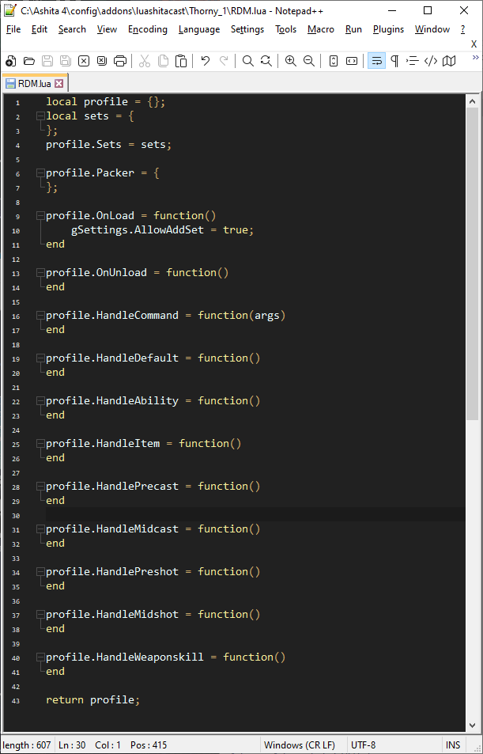

Directory
Lesson 1 - Install an editor.
Lesson 2 - Create and open a blank profile.
Lesson 3 - Add some sets to your profile.
Lesson 4 - Configure an idle set.
Lesson 5 - Configure some weaponskill sets.
Lesson 6 - Add a precast set.
Lesson 7 - Add some job ability swaps.
Lesson 8 - Accept and use input from the player.
Lesson 9 - Simplify user input with aliases and keybinds.
Lesson 10 - Create a set variation and add a setting to utilize it.
Lesson 11 - Allow your set variation to cycle through options with only one command.
Lesson 12 - Create a midcast section using RDM as an example.
Lesson 13 - Enable swaps for pet actions.
Snippet - Cleanly use elemental staves.
Snippet - Use a helper library to manage and display variables.
Snippet - Automatically evaluate level sync gear.
Snippet - Use multiple midcast sets, swapping to final gear just before cast completes.
Lesson 1 - Install an editor.
Lua is a full featured language, and syntax highlighting will make your experience much easier.
I would recommend you use either Notepad++ for a lightweight solution,
or VSCode if you're not worried about being overwhelmed by features.
While I personally use VSCode, I will do this tutorial with Notepad++ as I feel it is more suitable for those who are likely to need a tutorial.
Once you've installed your editor, log into FFXI.
A note before proceeding: This tutorial jumps between jobs to use easy to follow examples, as not every job uses every ability.
If you follow it exactly with copy/paste, you'll end up with a profile that does nobody any good, you should be modifying each step to suit your own job by changing
ability names, set names, etc. If you do not need to use a specific step on your current job, I would still recommend following along as many of them illustrate concepts
you'll want to apply elsewhere. I'm not a professional teacher, nor a lua master, this is just my best attempt to make profile creation more reasonable for the average user.
Lesson 2 - Create and open a blank profile.
While ingame, and on your desired job, type the following commands:
/load addons
/addon load luashitacast
/lac newlua
You should see a message along the lines of:
Next, browse to your ashita folder and go into the subdirectories: config, addons, luashitacast, then the one named after your current character. It should look like this(windows 10):

Right click and choose 'edit with notepad++'. Then, under the Language heading, ensure that the category L, and further the language Lua are selected.
This will highlight some parts of the profile for easier viewing. You should have your profile open and be looking at something similar to the below screenshot.
Note that colors may vary if you use a different theme. My notepad++ theme is Material-Dark if you like it.

Now you have a blank profile to work with and notepad++ set up to highlight lua syntax for you.
Lesson 3 - Add some sets to your profile.
Ingame, equip a set you'd like to use for idle, and type the command:
/lac addset Idle
Repeat for a few other sets you'd like to use, such as nuking, healing, weaponskill, fast cast, etc.
Look back at Notepad++(you may need to click File..Reload From Disk to ensure changes applied). You should have something resembling this:
local profile = {};
local sets = {
Idle = {
Main = { Name = 'Lathi', AugPath='A' },
Sub = 'Enki Strap',
Ammo = 'Staunch Tathlum +1',
Head = 'Befouled Crown',
Neck = { Name = 'Loricate Torque +1', AugPath='A' },
Ear1 = 'Hearty Earring',
Ear2 = 'Etiolation Earring',
Body = { Name = 'Amalric Doublet +1', AugPath='A' },
Hands = { Name = 'Amalric Gages +1', AugPath='D' },
Ring1 = 'Defending Ring',
Ring2 = 'Shneddick Ring',
Back = 'Moonlight Cape',
Waist = 'Fucho-no-Obi',
Legs = 'Assid. Pants +1',
Feet = { Name = 'Amalric Nails +1', AugPath='D' },
},
Nuke = {
Main = { Name = 'Lathi', AugPath='A' },
Sub = 'Enki Strap',
Ammo = 'Pemphredo Tathlum',
Head = { Name = 'Amalric Coif +1', AugPath='A' },
Neck = { Name = 'Src. Stole +2', AugPath='A' },
Ear1 = 'Malignance Earring',
Ear2 = 'Regal Earring',
Body = { Name = 'Amalric Doublet +1', AugPath='A' },
Hands = { Name = 'Amalric Gages +1', AugPath='D' },
Ring1 = 'Shiva Ring +1',
Ring2 = 'Shiva Ring +1',
Back = { Name = 'Taranus\'s Cape', Augment = { [1] = '"Mag. Atk. Bns."+10', [2] = 'Mag. Acc+20', [3] = 'Magic Damage +20', [4] = 'INT+30' } },
Waist = 'Refoccilation Stone',
Legs = { Name = 'Amalric Slops +1', AugPath='A' },
Feet = { Name = 'Amalric Nails +1', AugPath='D' },
},
Precast = {
Main = { Name = 'Lathi', AugPath='A' },
Sub = 'Enki Strap',
Ammo = 'Impatiens',
Head = { Name = 'Merlinic Hood', Augment = { [1] = '"Fast Cast"+7', [2] = '"Mag. Atk. Bns."+6' } },
Neck = 'Orunmila\'s Torque',
Ear1 = 'Malignance Earring',
Ear2 = 'Etiolation Earring',
Body = { Name = 'Merlinic Jubbah', Augment = { [1] = 'INT+10', [2] = '"Fast Cast"+7', [3] = 'Mag. Acc.+10' } },
Hands = { Name = 'Merlinic Dastanas', Augment = { [1] = '"Mag. Atk. Bns."+10', [2] = '"Fast Cast"+7', [3] = 'Mag. Acc.+15' } },
Ring1 = 'Prolix Ring',
Ring2 = 'Veneficium Ring',
Back = 'Perimede Cape',
Waist = 'Witful Belt',
Legs = { Name = 'Psycloth Lappas', AugPath='D' },
Feet = { Name = 'Merlinic Crackows', Augment = { [1] = '"Fast Cast"+7', [2] = 'MND+10' } },
},
};
profile.Sets = sets;
If you also plan on using Packer, a plugin that can collect gear listed in your LuAshitacast profile, you can add some meds and other necessities to the packer section:
profile.Packer = {
'Vile Elixir',
{ Name = 'Vile Elixir +1' },
{ Name = 'Remedy', Quantity = 12 },
{ Name = 'Panacea', Quantity = 24 },
{ Name = 'Red Curry Bun', Quantity = 12},
{ Name = 'Chrono Bullet', Quantity = 'all'}
};
Using a plain string, as in Vile Elixir, is no different than a table with only Name key, as in Vile Elixir +1. If you do not specify quantity, the default is 1.
A warning about AddSet: As this is using string parsing to replace your sets in place,
if you modify your sets table in a way that it encompasses more of your profile than it should,
it is possible for addset to remove huge chunks of your profile. For beginners, I recommend adding as
many sets as you can think of before proceeding and leave the AddSetBackup setting enabled(it is enabled by default!).
If you're using profiles downloaded from the internet, it's possible for the author to have disabled
addset via setting in OnLoad. This is intended to be used for your own safety and you should not enable it
if the author has it disabled, unless specifically told it is ok to do so by the author.
Lesson 4 - Configure an idle set.
To do this, we'll need to use the HandleDefault function.
Scroll down your profile until you find it.
We want to seperate our idle set by state, so we need to use the data functions.
You can see a full list of available data tables in gdata.html. First, we grab the player table:
local player = gData.GetPlayer();
Next, we evaluate whether we're engaged:
if (player.Status == 'Engaged') then
Then, we equip the set using gFunc.EquipSet(for a full list of available functions see gfunc.html):
gFunc.EquipSet(sets.Tp);
Since we have other possible comparisons to look at, we can use elseif to check for multiple things. Elseif statements are only evaluated if the prior if was not, so this guarantees we only hit one at a time.
elseif (player.Status == 'Resting') then
gFunc.EquipSet(sets.Resting);
Finally, we use an else to catch the most likely scenario so any other state will fall under it:
else
gFunc.EquipSet(sets.Idle);
Lua requires all if-elseif-else blocks to be terminated with end, so add that:
end
This will result in equipping the set Resting while you're resting, Tp while you're engaged, and Idle any other time. For it to work correctly, you must have defined those sets with those exact names. If you used other names, don't worry, you can just change the name inside the gFunc.EquipSet call.
For example, if you called your idle set refresh, you would change gFunc.EquipSet(sets.Idle) to gFunc.EquipSet(sets.refresh). You should end up with something like this:
profile.HandleDefault = function()
local player = gData.GetPlayer();
if (player.Status == 'Engaged') then
gFunc.EquipSet(sets.Tp);
elseif (player.Status == 'Resting') then
gFunc.EquipSet(sets.Resting);
else
gFunc.EquipSet(sets.Idle);
end
end
If you want to see it in action, type /lac reload ingame and it will take effect.
Bear in mind that you will need to use /lac disable to pause equipment swaps if
you need to add additional sets after defining an idle set, so you are not placed back in idle while manually equipping things.
Lesson 5 - Configure some weaponskill sets.
To do this, we'll need to use the HandleWeaponskill function. Scroll down your profile until you find it.
Much like how we wanted to differentiate engaged, resting, and other(assumed to be idle), we want to know which weaponskill we're using.
First, we grab the action table:
local action = gData.GetAction();
Next, we start checking for weaponskills that have their own sets, and adding equip commands:
if (action.Name == 'Savage Blade') then
gFunc.EquipSet(sets.SavageBlade);
Because we only want to equip one weaponskill set, we should use elseif for everything except the first set:
elseif (action.Name == 'Sanguine Blade') then
gFunc.EquipSet(sets.SanguineBlade);
elseif (action.Name == 'Spirits Within') then
gFunc.EquipSet(sets.SpiritsWithin);
And we end with a default weaponskill set to catch any ws we didn't bother to define:
else
gFunc.EquipSet(sets.DefaultWeaponskill);
As before, we have to use the end keyword to finish an if-elseif-else block.
end
Again, you can change the names of the sets and the weaponskills you check for however you like. Putting it all together, it should resemble:
profile.HandleWeaponskill = function()
local action = gData.GetAction();
if (action.Name == 'Savage Blade') then
gFunc.EquipSet(sets.SavageBlade);
elseif (action.Name == 'Sanguine Blade') then
gFunc.EquipSet(sets.SanguineBlade);
elseif (action.Name == 'Spirits Within') then
gFunc.EquipSet(sets.SpiritsWithin);
else
gFunc.EquipSet(sets.DefaultWeaponskill);
end
end
If you want to see it in action, type /lac reload ingame and go weaponskill something. You can actually leave the equipment menu open and watch the swaps happen in real time.
Lesson 6 - Add a precast set.
To do this, we'll need to use the HandlePrecast function. Scroll down your profile until you find it.
Unlike the last couple of examples, you might only need one set for all precasts.
That makes this super easy, because you don't have to use any if-elseif-else gating at all!
Simply equip the set:
gFunc.EquipSet(sets.FastCast);
As always, you can change the name of the set if you want. It should look like this:
profile.HandlePrecast = function()
gFunc.EquipSet(sets.FastCast);
end
But, let's say you have a Marsyas or Twilight Cloak. You'll need to equip those seperately, which we do by using if gating.
Since it is only a single conditional(If we're casting honor march, we need to equip Marsyas), you won't need elseif or else.
If you've been following so far, you might have the idea in your head already, but we will accomplish this with the action table just like in weaponskills.
local action = gData.GetAction();
if (action.Name == 'Honor March') then
gFunc.Equip('range', 'Marsyas');
gFunc.Equip('ammo', 'displaced');
end
Combining it together, we get:
profile.HandlePrecast = function()
gFunc.EquipSet(sets.FastCast);
local action = gData.GetAction();
if (action.Name == 'Honor March') then
gFunc.Equip('range', 'Marsyas');
gFunc.Equip('ammo', 'displaced');
end
end
This introduces two new concepts. First, we use a single equip tag. Since we already equipped the precast set, we don't need a whole new set, we can just modify slots.
By calling Equip to set range to marsyas, we modify the pending set to include marsyas instead of it's existing range. Second, we add the ammo as displaced.
This is a crucial component for fast swaps; the displaced tag tells LuAshitacast that equipping this set will remove your ammo slot.
Consider this example scenario: While idling in gjallarhorn, you equip an impatiens for precast, then gjallarhorn for midcast.
Because precast and midcast happen nearly instantly, when LuAshitacast examines midcast it will know your ammo has changed to impatiens, but your client will still show gjallarhorn in range.
Because gjallarhorn is still shown in range, LuAshitacast will not equip it, and your midcast will end up with impatiens and no instrument!
By adding a displaced tag, you let LuAshitacast know that the slot will be emptied, so any other swaps occuring in the near future can be performed properly.
Now is a good time to go back and look at your sets and add displaced tags: Most ammo pieces will displace ranged slots, cloaks will displace headgear, and so on.
A note on precast/preshot: The server will often send both your precast+midcast or preshot+midshot swaps in the same packet sequence. This means you may never see your precast/preshot on the equipment screen.
If it doesn't seem to be taking effect, and you want to verify that it is working, use /lac debug on to be sure.
Lesson 7 - Add some job ability swaps.
To do this, we'll need to use the HandleAbility function. Scroll down your profile until you find it.
Here we will introduce a new function, string.match, that we use to partially match names.
There's no need to list out each of the 8 different quick draws when they all share the same name:
local action = gData.GetAction();
if string.match(action.Name, ' Shot') then
Now, we still want to differentiate light and dark shot because they use different sets, so we will use nested conditionals.
This might sound scary, but it really just means 'if statements inside other if statements'.
if (action.Name == 'Light Shot') then
gFunc.EquipSet(sets.QuickDrawAccuracy);
elseif (action.Name == 'Dark Shot') then
gFunc.EquipSet(sets.QuickDrawAccuracy);
else
gFunc.EquipSet(sets.QuickDrawDamage);
end
Since we already checked that the name contains ' Shot', and we haven't yet ended that if statement,
then we know anything besides Light Shot or Dark Shot will be a damage quick draw.
But, this is a little clunky, we can also use an or statement to make it even cleaner:
if (action.Name == 'Light Shot') or (action.Name == 'Dark Shot') then
gFunc.EquipSet(sets.QuickDrawAccuracy);
else
gFunc.EquipSet(sets.QuickDrawDamage);
end
This works the same way, the first if statement will be matched if either of the checks are matched. We did not include any elseifs, so anytime the first statement is not matched we will equip our damage set.
Now, we still have to consider possible other abilities, so let's add some elseifs that will reference the first string.match check:
elseif (action.Name == 'Wild Card') then
gFunc.Equip('Feet', 'Lanun Bottes +3');
elseif (action.Name == 'Random Deal') then
gFunc.Equip('Body', 'Lanun Frac +3');
Since we don't need a default equipment set for abilities, we could leave it like this.
Without an else statement, you'll be left in whatever gear you were in when the ability started for any other ability.
However, if you want to min-max, you could add a PDT set or something defensive(or refresh, regen, etc for possible tick) for other abilities:
else
gFunc.EquipSet(sets.PDT);
And, as always, we need an end statement for the outer if-elseif-else chain:
end
Before putting it all together, I want to note the importance of indentation. Any time you leave an if-elseif-else statement or similar open, you should indent to make it easier to read.
In this case, the properly indented code all together should look like:
profile.HandleAbility = function()
local action = gData.GetAction();
if string.match(action.Name, ' Shot') then
if (action.Name == 'Light Shot') or (action.Name == 'Dark Shot') then
gFunc.EquipSet(sets.QuickDrawAccuracy);
else
gFunc.EquipSet(sets.QuickDrawDamage);
end
elseif (action.Name == 'Wild Card') then
gFunc.Equip('Feet', 'Lanun Bottes +3');
elseif (action.Name == 'Random Deal') then
gFunc.Equip('Body', 'Lanun Frac +3');
else
gFunc.EquipSet(sets.PDT);
end
end
As a final note, I directly equip the items for wild card and Random Deal in this example. If you are making a profile you intend to share, it is better practice to make sets(even if they only have one item each).
That way, the user will only have to edit sets and won't even have to look at anything else.
Lesson 8 - Accept and use input from the player.
If you only have one potential set for each action, you can probably stop here. But, in modern FFXI, people tend to want options.
For example, a mage might want to have a refresh-based idle set and a more defensive idle set. We can accomplish this by using a local variable with accompanying commands to modify it.
First, we want to make a settings table to keep some organization for all of our settings. This can be anywhere at file scope(that is to say, anywhere not inside another function/table/etc),
but I recommend putting it after your sets table and before assigning your sets table to profile.
Precast = {
Main = { Name = 'Lathi', AugPath='A' },
Sub = 'Enki Strap',
Ammo = 'Impatiens',
Head = { Name = 'Merlinic Hood', Augment = { [1] = '"Fast Cast"+7', [2] = '"Mag. Atk. Bns."+6' } },
Neck = 'Orunmila\'s Torque',
Ear1 = 'Malignance Earring',
Ear2 = 'Etiolation Earring',
Body = { Name = 'Merlinic Jubbah', Augment = { [1] = 'INT+10', [2] = '"Fast Cast"+7', [3] = 'Mag. Acc.+10' } },
Hands = { Name = 'Merlinic Dastanas', Augment = { [1] = '"Mag. Atk. Bns."+10', [2] = '"Fast Cast"+7', [3] = 'Mag. Acc.+15' } },
Ring1 = 'Prolix Ring',
Ring2 = 'Veneficium Ring',
Back = 'Perimede Cape',
Waist = 'Witful Belt',
Legs = { Name = 'Psycloth Lappas', AugPath='D' },
Feet = { Name = 'Merlinic Crackows', Augment = { [1] = '"Fast Cast"+7', [2] = 'MND+10' } },
},
};
local Settings = {
UseRefreshIdle = true
};
profile.OnLoad = function()
Now, we have an existing table named Settings, with an entry called UseRefreshIdle set to true(you could set it to false if you want it off by default).
We can use this for an if statement easily enough. Let's go down to where idle gear is, and add a nested conditional like we used for the quick draw example.
profile.HandleDefault = function()
local player = gData.GetPlayer();
if (player.Status == 'Engaged') then
gFunc.EquipSet(sets.Tp);
elseif (player.Status == 'Resting') then
gFunc.EquipSet(sets.Resting);
else
if (Settings.UseRefreshIdle == true) then
gFunc.EquipSet(sets.IdleRefresh);
else
gFunc.EquipSet(sets.IdleDefense);
end
end
end
If you were to reload it now, you would just end up idling in whatever set you hardcoded earlier under Settings.
But, we need to be able to change it. So, let's add a command. We do this by going down to the HandleCommand event.
The HandleCommand event passes anything typed after /lac fwd to your profile as a table of arguments named args.
We can use this to edit your variable in real time:
profile.HandleCommand = function(args)
if (args[1] == 'idlerefresh') then
if (Settings.UseRefreshIdle == true) then
Settings.UseRefreshIdle = false;
else
Settings.UseRefreshIdle = true;
end
end
end
Breaking it down, first we check that the user typed idlerefresh(full command would be /lac fwd idlerefresh).
Next, we check if Settings.UseRefreshIdle is enabled, and turn it off if it is. Otherwise, we turn it on. This results in the command always flipping the status of the variable.
Lesson 9 - Simplify user input with aliases and keybinds.
Looking at the last lesson, you might have been thinking something along the lines of
I don't like /lac fwd or I would rather have a keybind than have to type a command or use a macro space.
Fortunately, with full access to lua, these are easy issues to resolve. First, let's say you want to type /rdm instead of /lac fwd.
We do this by registering an Ashita alias in the OnLoad event.
AshitaCore:GetChatManager():QueueCommand(-1, '/alias /rdm /lac fwd');
Incidentally, the -1 is a command type that will allow ashita itself and other plugins and addons to view your command.
If you want to send the command directly to the game, you should use 1. For other options, see Ashita documentation.
It is important to note that since we're interacting with something outside of our own profile, it will remain after our profile is unloaded.
Anytime you do anything like that, you want to ensure that your profile cleans up after itself, so go down to the OnUnload event and add:
AshitaCore:GetChatManager():QueueCommand(-1, '/alias delete /rdm');
In place, should look something like:
profile.OnLoad = function()
gSettings.AllowAddSet = true;
AshitaCore:GetChatManager():QueueCommand(-1, '/alias /rdm /lac fwd');
end
profile.OnUnload = function()
AshitaCore:GetChatManager():QueueCommand(-1, '/alias delete /rdm');
end
If you're familiar with Ashita in general, you can probably extrapolate how to do binds from this. We're just going to use the same function call, but with the /bind command instead:
AshitaCore:GetChatManager():QueueCommand(-1, '/bind ^F1 /lac fwd idlerefresh');
See Ashita documentation for full information on bindable keys and modifiers, but in short you can use ^ for control, ! for alt, and ^! for both. And of course, we have to unbind on unload:
AshitaCore:GetChatManager():QueueCommand(-1, '/unbind ^F1');
All together, you should have:
profile.OnLoad = function()
gSettings.AllowAddSet = true;
AshitaCore:GetChatManager():QueueCommand(-1, '/alias /rdm /lac fwd');
AshitaCore:GetChatManager():QueueCommand(-1, '/bind ^F1 /lac fwd idlerefresh');
end
profile.OnUnload = function()
AshitaCore:GetChatManager():QueueCommand(-1, '/alias delete /rdm');
AshitaCore:GetChatManager():QueueCommand(-1, '/unbind ^F1');
end
Feel free to use as many aliases and keybinds as you'd like to simplify your profile commands, just remember to remove them when you unload. They're very lightweight and make things much easier!
Lesson 10 - Create a set variation and add a setting to utilize it.
If you're coming from Ashitacast, you might have some experience combining variable names such as <equip set="TP-$TpVariant" />.
If you're coming from gearswap, you're probably used to sets having nested tables, such as equip(sets.TP[TpVariant]).
LuAshitacast does things a little differently, as we want all your sets to be within the same un-nested table, but you can still apply these concepts easily.
I recommend naming sets of this nature using underscores to indicate variants, such as TP_TpVariant. This will make things easier to read, as each variable is seperated.
To equip these sets, we'll use string concatenation(a fancy term for smushing words together!). So, let's hop in the deep end and look at the code we'll use for this:
gFunc.EquipSet('TP_' .. Settings.TpVariant);
String concatenation is done with .. in lua.
What we're doing here is combining TP_ with the value of a variable named Settings.TpVariant to get a set name.
So, to make this useful, we need to create some set variations, for example, let's say you want 4 different TP sets:
Default Hybrid HighAcc LowAcc
Because we want to prefix them with TP_, the actual sets you'll want to add to your profile are:
TP_Default TP_Hybrid TP_HighAcc TP_LowAcc
With those added, we need to look at the variable TpVariant. First, we go to Settings(from step 8) and add another entry to the settings table:
local Settings = {
UseRefreshIdle = true,
TpVariant = 'Default'
};
Note that because this is a string, to be used as text, we encompass it in ''.
Further, because we're adding an additional variable, we need a comma after UseRefreshIdle so the interpretor knows there are more variables to come.
Next, we drop back to HandleDefault and set up our TP equip function to utilize the variable with the earlier line:
profile.HandleDefault = function()
local player = gData.GetPlayer();
if (player.Status == 'Engaged') then
gFunc.EquipSet('TP_' .. TpVariant);
elseif (player.Status == 'Resting') then
gFunc.EquipSet(sets.Resting);
else
if (Settings.UseRefreshIdle == true) then
gFunc.EquipSet(sets.IdleRefresh);
else
gFunc.EquipSet(sets.IdleDefense);
end
end
end
Now, like in lesson 8, if you were to reload you'd drop into TP_Default, because that is hardcoded in your settings. Once again, we need to add a command to alter it, so back to HandleCommand.
We want to use elseif for every command besides the first, to ensure we only match one. This time, we want to look at 2 arguments(the command itself, and the set we're changing to):
elseif (args[1] == 'tpset') then
if (#args > 1) then
Settings.TpVariant = args[2];
end
end
We use #args to ensure that a second argument exists, so if the user types /rdm tpset
then nothing happens, but if the user types /rdm tpset HighAcc you instantly swap to HighAcc TP set.
You can use keybinds or further aliases to improve the user experience. In place, it should look like:
profile.HandleCommand = function(args)
if (args[1] == 'idlerefresh') then
if (Settings.UseRefreshIdle == true) then
Settings.UseRefreshIdle = false;
else
Settings.UseRefreshIdle = true;
end
elseif (args[1] == 'tpset') then
if (#args > 1) then
Settings.TpVariant = args[2];
end
end
end
Lesson 11 - Allow your set variation to cycle through options with only one command.
Back in Lesson 10, we created a multi-set variation for TP. But, having 4 different commands or binds for the same set is inconvenient.
So, now we'll create a way to cycle through them in order. First, we use a numerical table to create a list of options, this needs to be at file scope and I recommend
placing it above settings:
local TpVariantTable = {
[1] = 'Default',
[2] = 'Hybrid',
[3] = 'HighAcc',
[4] = 'LowAcc'
};
local Settings = {
UseRefreshIdle = true,
TpVariant = 'Default'
};
Ensure that you've listed every option you want to cycle through here, then we change our setting to a numerical value for the option we want to start with:
local TpVariantTable = {
[1] = 'Default',
[2] = 'Hybrid',
[3] = 'HighAcc',
[4] = 'LowAcc'
};
local Settings = {
UseRefreshIdle = true,
TpVariant = 1
};
Now, instead of setting TpVariant to the name of the set we want, it needs to be set to the number representing the set.
Next, we go down to equip and change it so that it looks up the set using the number, rather than a name:
gFunc.EquipSet('TP_' .. TpVariantTable[Settings.TpVariant]);
In simple terms, this takes the value of TpVariant(1) and looks for an entry in TpVariantTable that matches it, so you end up with 'Default'.
Now, to cycle through the table, we just need to change the number of TpVariant rather than actually specifying a term. So, let's go back to HandleCommand and alter it to do that:
if (args[1] == 'tpset') then
Settings.TpVariant = Settings.TpVariant + 1;
if (Settings.TpVariant > #TpVariantTable) then
Settings.TpVariant = 1;
end
end
Breaking down the changes here, we got rid of the check for a second argument as we no longer need one. First, we increase the numerical TpVariant value by 1.
Then, we check if it's higher than the amount of entries in the table, and if it is we go back to 1. That way, you can cycle indefinitely.
Because the equip section has already been modified to equip the set, now you can have a single macro or bind to cycle through options easily.
However, most users will also want to see what step they are on rather than having to see what equipment shows up.
We can do this with the message function:
gFunc.Message('TP Set: ' .. TpVariantTable[Settings.TpVariant]);
Notice that we use the same concatenation here. This will print a message to log showing your current TP set, so we drop it in after editing the TP set. All together, should have:
if (args[1] == 'tpset') then
Settings.TpVariant = Settings.TpVariant + 1;
if (Settings.TpVariant > #TpVariantTable) then
Settings.TpVariant = 1;
end
gFunc.Message('TP Set: ' .. TpVariantTable[Settings.TpVariant]);
end
Lesson 12 - Create a midcast section using RDM as an example.
This might feel a little out of order, but I've decided to place it here due to the amount of code, despite most of the concepts themselves being basic.
We're only going to introduce one new function here, ashita meta-tables. By declaring a table with T{ instead of {, Ashita's sugar lib will create a bunch of additional functions
for us to use within the table. Now, onto the actual code(if you're following, I probably don't have to tell you, but we'll be going to HandleMidcast for this):
profile.HandleMidcast = function()
local MndDebuffs = T{ 'Slow', 'Paralyze', 'Slow II', 'Paralyze II', 'Addle', 'Addle II' };
local ElementalDebuffs = T{ 'Burn', 'Rasp', 'Drown', 'Choke', 'Frost', 'Shock' };
local action = gData.GetAction();
if (action.Skill == 'Enfeebling Magic') then
if (MndDebuffs:contains(action.Name)) then
gFunc.EquipSet(sets.DebuffMND);
else
gFunc.EquipSet(sets.DebuffINT);
end
elseif (action.Skill == 'Elemental Magic') then
if (ElementalDebuffs:contains(action.Name)) then
gFunc.EquipSet(sets.ElementalDebuff);
elseif (action.Name == 'Impact') then
gFunc.EquipSet(sets.Impact);
else
gFunc.EquipSet(sets.Nuke);
end
elseif (action.Skill == 'Dark Magic') then
if (action.Name == 'Stun') then
gFunc.EquipSet(sets.Stun);
else
gFunc.EquipSet(sets.DarkMagic);
end
elseif string.match(action.Name, 'Cure') or string.match(action.Name, 'Curaga') then
gFunc.EquipSet(sets.Cure);
elseif (action.Skill == 'Enhancing Magic') then
gFunc.EquipSet(sets.Enhancing);
else
gFunc.EquipSet(sets.Haste);
end
end
Ok, there's a lot of stuff here. Take a minute and try to follow the indentations to get an idea of everything going on. First, we branch out into the different magic skills, as well as cures.
As we branch into enfeebling, we run into the :contains call. This call is specific to Ashita's sugar libraries, and cannot be used unless you declare the table with T{.
It returns true if any entry in the table matches the argument passed in. So, in this case, we check if the spell is a MND spell and decide whether to go to DebuffMND or DebuffINT.
If you want to further split into multiple sets, you could use a toggle like in lesson 8, or set variants like in lesson 10-11. Keeping it a little simpler for now.
Elemental splits the same way, first checking for elemental debuffs, then impact, then falling back on nukes.
In dark magic, we make an exception for stun, then fall to a generic dark set.
Cures always go to cure, enhancing always goes to enhancing, and then we finish off with a haste set for anything unspecified to lower recasts. Now, much of this is personal design choice.
Maybe you have more spells that need exceptions, like a specific drain set that is seperate from absorb spells. You should be able to follow the ideas to implement that. Don't feel limited
by my design choices, this is simply an example. Try to understand the individual components and learn from them, rather than copy/pasting the entire thing. Note that while I put the tables inside the midcast
section, they could also be placed at file scope, alongside any variation tables.
Lesson 13 - Enable swaps for pet actions.
Pet actions are a unique beast. Because they can happen at the same time as player actions, we have to be able to decide what to balance them with.
As a result, a one-size-fits-all approach is unlikely to satisfy everyone. I've decided to treat this by adding the current pet action as a data call, which allows
the user to override anything they want with pet actions. Your approach may drastically vary from mine, especially as you learn lua, and that's perfectly fine! With
all of this in mind, let's start by declaring a local function. This function will not be called by LuAshitacast, you'll have to call it yourself.
We'll place this after sets, but before the profile defined functions so that we can access it from any of them. So, in place, it will look like:
local Settings = {
UseRefreshIdle = true,
TpVariant = 1
};
local function HandlePetAction(PetAction)
end
profile.OnLoad = function()
Breaking it down, we've just created a function called HandlePetAction with an argument of PetAction. We'll call it like this:
local petAction = gData.GetPetAction();
HandlePetAction(petAction);
This will save us the hassle of calling GetPetAction twice. If you're wondering why it isn't simply a predefined function, it's to allow the user the option to ignore the pet action
and continue with their own swaps. So, we need to add some rules around it. Let's use ashita tables again, and create a list of pet actions we care to swap gear for.
In this case, since we may want to override multiple actions with pet swaps, we want the table to be at file scope so we can access it anywhere.
Place it with your other tables after sets.
local PetSkillSwaps = T{'Wind Blade', 'Thunderstorm', 'Volt Strike', 'Thunderspark'};
local Settings = {
UseRefreshIdle = true,
TpVariant = 1
};
Now, to actually utilize it, we expand the earlier code a bit and place it into HandleDefault:
profile.HandleDefault = function()
local petAction = gData.GetPetAction();
if (petAction ~= nil) and PetSkillSwaps:contains(petAction.Name) then
HandlePetAction(petAction);
return;
end
local player = gData.GetPlayer();
if (player.Status == 'engaged') then
gFunc.EquipSet('TP_' .. TpVariant);
elseif (player.Status == 'resting') then
gFunc.EquipSet(sets.Resting);
else
if (Settings.UseRefreshIdle == true) then
gFunc.EquipSet(sets.IdleRefresh);
else
gFunc.EquipSet(sets.IdleDefense);
end
end
end
First, we check if petAction isn't nil(if pet is not performing an action, it will be nil!), then we check if our table contains an action. If it does, we call the HandlePetAction function,
then we call return. Return ends the current processing immediately, so any later swaps can't occur. This is necessary, so your normal sets don't override the pet action.
Now our function is linked. Whenever we're idle and our pet is in the middle of an action, we'll end up calling the HandlePetAction function we created, and passing in the petAction table.
Note that while I used a table listing only a few moves to decide if I want to override idle, you could also use petAction.Type or even default to overriding anytime it is not nil.
You have all the flexibility to decide which moves are worth overriding, and if you plan to override for most moves it's best to either use a table of moves you won't swap for or not use a table at all.
This way, you don't have to maintain a massive table of little value.
From here, we just go into our function and handle the equipment swaps the same way we've done everything else:
local function HandlePetAction(PetAction)
if (PetAction.Name == 'Wind Blade') or (PetAction.Name == 'Thunderstorm') or (PetAction.Name == 'Thunderspark') then
gFunc.EquipSet(sets.PetMAB);
elseif (PetAction.Name == 'Volt Strike') then
gFunc.EquipSet(sets.VoltStrike);
end
end
The first if statement could use a table to look cleaner. I'm not going to go too deeply into this, the same rules apply as anything else, you want to design branching functions
to get to the set you need. If you need variants, toggles, etc.. add them. But, we also have to consider that we can cast and perform other actions while a pet acts. Let's say
we want to be able to cast haste during blood pacts, without ruining our blood pact gear. We move down to HandleMidcast, and add much of the same code:
profile.HandleMidcast = function()
local MndDebuffs = T{ 'Slow', 'Paralyze', 'Slow II', 'Paralyze II', 'Addle', 'Addle II' };
local ElementalDebuffs = T{ 'Burn', 'Rasp', 'Drown', 'Choke', 'Frost', 'Shock' };
local action = gData.GetAction();
if (action.Name == 'Haste') then
local petAction = gData.GetPetAction();
if (petAction ~= nil) and PetSkillSwaps:contains(petAction.Name) then
HandlePetAction(petAction);
return;
end
end
if (action.Skill == 'Enfeebling Magic') then
if (MndDebuffs:contains(action.Name)) then
gFunc.EquipSet(sets.DebuffMND);
else
gFunc.EquipSet(sets.DebuffINT);
end
elseif (action.Skill == 'Elemental Magic') then
if (ElementalDebuffs:contains(action.Name)) then
gFunc.EquipSet(sets.ElementalDebuff);
elseif (action.Name == 'Impact') then
gFunc.EquipSet(sets.Impact);
else
gFunc.EquipSet(sets.Nuke);
end
Now we'll also wear BP gear if pet is BPing while we're casting haste. Because Precast is instant, we don't need to alter that, we should keep it
so we keep maximum cast speed. You can add a table of spells, or even override all spells, all abilities, etc. As I've said, pet abilities are very
circumstantial and different people will have different outlooks on ideal handling for them. I feel this design allows you the maximum flexibility.
A note on Puppetmaster: Your puppet's weaponskills execute almost instantly. It is highly probable that by the time the client
is aware the weaponskill is happening, it is too late to send a swap to the server. For this reason, it is not recommended to try to code PUP
weaponskill gear in this manner. BST, SMN, DRG, and GEO(Radial Arcana, for example) pets have a longer ready time and will function fine.
A further note on SMN and BST: Ready and BP commands are considered job abilities internally, so put your recast- gear there. I recommend also
having a check so that you don't bother to equip recast- gear during astral conduit(or simply ensure that pet abilities have priority over the job abilities).
Snippet - Cleanly use elemental staves.
Between the earlier lessons and the available lua documentation, I believe most reasonable tasks can be accomplished. So, moving forward, I will provide small bits of
code to solve common problems. In this case, elemental staves. We start by adding a local table at file scope to map them out:
local ElementalStaffTable = {
['Fire'] = 'Fire Staff',
['Earth'] = 'Terra\'s Staff',
['Water'] = 'Water Staff',
['Wind'] = 'Water Staff',
['Ice'] = 'Aquilo\'s Staff',
['Thunder'] = 'Thunder Staff',
['Light'] = 'Light Staff',
['Dark'] = 'Pluto\'s Staff'
};
Note that I use \ as an 'escape code' prior to '. This allows lua to understand that ' will not end the string and is meant as it's own character.
You may have already noticed this when using addset. So, now we have a table mapped to element strings, we jump to midcast, where we're equipping our stuff:
local action = gData.GetAction();
If you have written your midcast section, you likely already have this in there to split out results by spell. If not, you'll need it to look up the spell's element.
gFunc.Equip('main', ElementalStaffTable[action.Element]);
We pull the element from the action table, and since the possible return values match the keys of the table, we can grab our matching staff for the equip command. Done!
Note that in the example below, I've included the call in elemental magic, enfeebling magic, and dark magic, but left it out of curing, enhancing, and haste.
This is, again, a design choice. I placed it outside of the inner if-elseif-else statements as I want it to apply to all sets.
profile.HandleMidcast = function()
local MndDebuffs = T{ 'Slow', 'Paralyze', 'Slow II', 'Paralyze II', 'Addle', 'Addle II' };
local ElementalDebuffs = T{ 'Burn', 'Rasp', 'Drown', 'Choke', 'Frost', 'Shock' };
local action = gData.GetAction();
if (action.Skill == 'Enfeebling Magic') then
if (MndDebuffs:contains(action.Name)) then
gFunc.EquipSet(sets.DebuffMND);
else
gFunc.EquipSet(sets.DebuffINT);
end
gFunc.Equip('main', ElementalStaffTable[action.Element]);
elseif (action.Skill == 'Elemental Magic') then
if (ElementalDebuffs:contains(action.Name)) then
gFunc.EquipSet(sets.ElementalDebuff);
elseif (action.Name == 'Impact') then
gFunc.EquipSet(sets.Impact);
else
gFunc.EquipSet(sets.Nuke);
end
gFunc.Equip('main', ElementalStaffTable[action.Element]);
elseif (action.Skill == 'Dark Magic') then
if (action.Name == 'Stun') then
gFunc.EquipSet(sets.Stun);
else
gFunc.EquipSet(sets.DarkMagic);
end
gFunc.Equip('main', ElementalStaffTable[action.Element]);
elseif string.match(action.Name, 'Cure') or string.match(action.Name, 'Curaga') then
gFunc.EquipSet(sets.Cure);
elseif (action.Skill == 'Enhancing Magic') then
gFunc.EquipSet(sets.Enhancing);
else
gFunc.EquipSet(sets.Haste);
end
end
Snippet - Use a helper library to manage and display variables.
First, take the included file ashita/docs/luashitacast/common/varhelper.lua and copy it to ashita/config/addons/luashitacast/common. We'll be using this for this example.
Next, add to the top of your profile:
local profile = {};
local varhelper = gFunc.LoadFile('common/varhelper.lua');
local sets = {
gFunc.LoadFile can be used to load an outside lua file from your ashitacast config directory. Now, we have a lua class called varhelper accessible to us with a few functions inside it:
varhelper.Initialize() - This will 'start' the varhelper class and it's font object. You should call it OnLoad, like so:
profile.OnLoad = function()
gSettings.AllowAddSet = true;
AshitaCore:GetChatManager():QueueCommand(-1, '/alias /rdm /lac fwd');
varhelper.Initialize();
end
varhelper.Destroy() - This will destroy the varhelper class's font object. It belongs in unload, like so:
profile.OnUnload = function()
AshitaCore:GetChatManager():QueueCommand(-1, '/alias delete /rdm');
varhelper.Destroy();
end
Now you're all set up to use the library. First, you want to go back to OnLoad and set up your variables. varhelper supports both toggles(true/false variables) and cycles(variables that shuffle through values).
To set up the examples from earlier in the document, we'll use varhelper.CreateToggle(name, default) and varhelper.CreateCycle(name, array). The first entry of array should be the default.
profile.OnLoad = function()
gSettings.AllowAddSet = true;
AshitaCore:GetChatManager():QueueCommand(-1, '/alias /rdm /lac fwd');
varhelper.Initialize();
varhelper.CreateToggle('UseRefreshIdle', true);
varhelper.CreateCycle('TpVariant', { [1] = 'Default', [2] = 'Hybrid', [3] = 'HighAcc', [4] = 'LowAcc' });
end
This will set up a toggle and cycle inside of varhelper, and we can delete TpVariantTable and Settings if we no longer need them. Varhelper will simplify the code by reducing it to a single line of setup,
but it will also display the current values onscreen for ease of use and convenience. But, we still have to go through and change the other references to use. To get the values of variables, we will use varhelper.GetToggle(name) and varhelper.GetCycle(name).
profile.HandleDefault = function()
local player = gData.GetPlayer();
if (player.Status == 'engaged') then
gFunc.EquipSet('TP_' .. varhelper.GetCycle('TpVariant'));
elseif (player.Status == 'resting') then
gFunc.EquipSet(sets.Resting);
else
if (varhelper.GetToggle('UseRefreshIdle') == true) then
gFunc.EquipSet(sets.IdleRefresh);
else
gFunc.EquipSet(sets.IdleDefense);
end
end
end
Now, your swaps are using the variables from varhelper. But, we still have to change our commands. We do this with varhelper.AdvanceToggle(name) and varhelper.AdvanceCycle(name).
profile.HandleCommand = function(args)
if (args[1] == 'idlerefresh') then
varhelper.AdvanceToggle('UseRefreshIdle');
elseif (args[1] == 'tpset') then
varhelper.AdvanceCycle('TpVariant');
end
end
All done! Now you have an onscreen display of your toggles in real time, and you've reduced the code in your profile significantly. Note that varhelper is a pretty simple helper class, and there's a whole lot more that can be done with lua.
Advanced users may want to make their own libraries and explore with them.
Snippet - Automatically evaluate level sync gear.
To evaluate level sync gear, we will use the function gFunc.EvaluateLevels() in combination with a specialized sets format. First, you'll need to define your sets in this manner:
local sets = {
TP_Priority = {
Main = { {Name = 'Mandau', Level=75}, 'Blau Dolch', 'Cermet Kukri' },
Head = { 'Walahra Turban', 'Optical Hat', 'Voyager Sallet', 'Empress Hairpin' },
Body = { 'Adaman Hauberk', 'Hauberk', 'Haubergeon', 'Scorpion Harness', 'Brigandine' },
Hands = { 'Bandomusha Kote', 'Dusk Gloves +1', 'Battle Gloves' },
Legs = { 'Byakko\'s Haidate', 'Dusk Trousers', 'Tiger Trousers' },
Feet = { 'Dusk Ledelsens +1', 'Fuma Sune-Ate', 'Fuma Kyahan', 'Bounding Boots' },
}
};
Specifically, you add the suffix _Priority after each set name. Then, each slot contains a table of potential items. The first listed entry in each table to be below your current level
will be used. If an item name is shared between multiple items, you should use a table and specify the level parameter to be more specific. This is important because Ashita has no way of knowing if the Mandau
you specified is the level 75 version or the level 95 version, for example. If you need to use augment tags or other similar tags, embed them within the item table. Once you've built all your sets out this way,
you'll need to add code to trigger the function. First, go to your settings table and add a new variable to store your level:
local Settings = {
UseRefreshIdle = true,
TpVariant = 'Default',
CurrentLevel = 0,
};
Next, we need to make sure sets are evaluated every time your level changes, so over to HandleDefault:
profile.HandleDefault = function()
local myLevel = AshitaCore:GetMemoryManager():GetPlayer():GetMainJobLevel();
if (myLevel ~= Settings.CurrentLevel) then
gFunc.EvaluateLevels(profile.Sets, myLevel);
Settings.CurrentLevel = myLevel;
end
This belongs at the start of the section so it happens before your swaps. Specifically what we're doing here is asking a built in function to collapse these tables. After it's executed, the set
sets.TP will contain a set with the first valid option from each entry in sets.TP_Priority. Then, you can just use the set as normal anywhere in
your configuration file:
gFunc.EquipSet(sets.TP);
Snippet - Use multiple midcast sets, swapping to final gear just before cast completes.
This was added by request from private server users. Because communications are subject to latency, there is always a possibility that when using this function you will not have your final gear on in time.
First, you must calculate how long your midcast will be, this is an example:
local spell = gData.GetAction();
local fastCastValue = 0.30;
local minimumBuffer = 0.1;
local packetDelay = 0.4;
local castDelay = ((spell.CastTime * (1 - fastCastValue)) / 1000) - minimumBuffer;
if (castDelay >= packetDelay) then
gFunc.SetMidDelay(castDelay);
end
This can be done in precast or midcast, though it is often better to put it in precast so that you can adjust your fast cast value based on your precast set. Let's break down the values:
-fastCastValue represents your expected *total* level of casttime reduction for the spell. This should include traits, gear, etc.
-minimumBuffer represents how much extra time you should build in for variance in latency, measured in seconds. This does not include packet interval fluctuation.
-packetDelay represents how long your client waits between sending packets, in seconds. This is 0.4 unless you use PacketFlow plugin, in which case it is 0.25.
Once these values are filled in, the calculation will figure out how long you should wait before putting your final gear on. AC will internally offset it by a packet interval to ensure it gets on by that time.
This is all you need to do to delay the midcast gear, but as is you would be sitting in your precast set the whole time. If you want to further improve it, you can add the following to midcast[cannot be in precast].
gFunc.InterimEquipSet(sets.PDT);
This function exists only for this purpose, it will equip a set after precast so that you're wearing it until your midcast gear activates. It works exactly like gFunc.EquipSet.
A PDT or defensive set here will help you get the most out of your swaps. If you want to further optimize your interim set, you can also use the function gFunc.InterimEquip in
the same way as you would use gFunc.Equip. The same functions can be used the same way in preshot/midshot for ranged, though the calculation will require you figure out your ranged delay.
None of these functions will do anything when called outside of the appropriate sections.